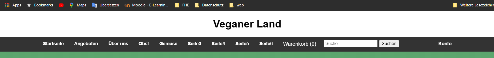
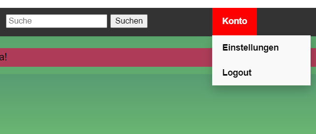
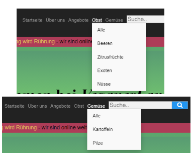
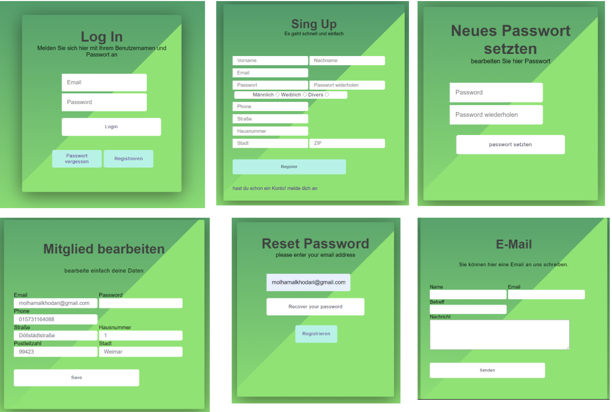
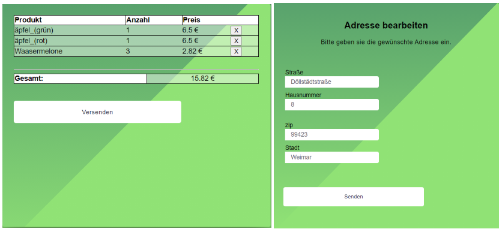
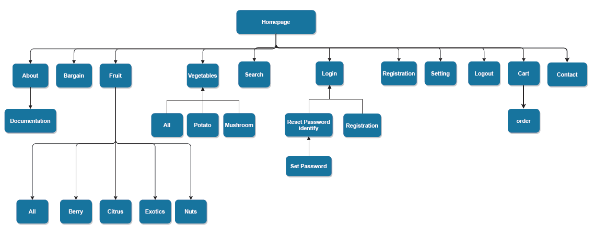
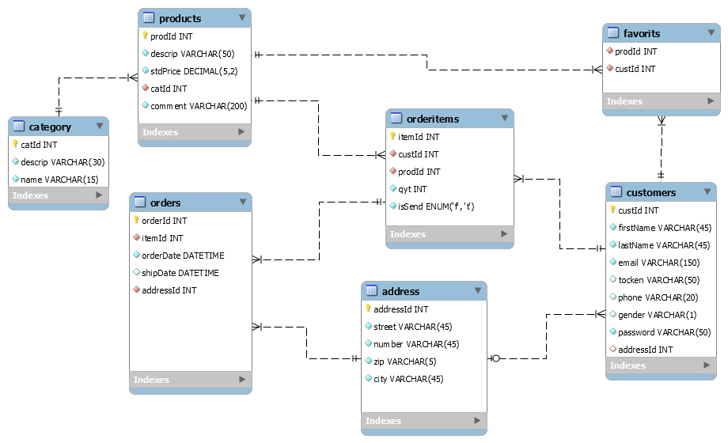
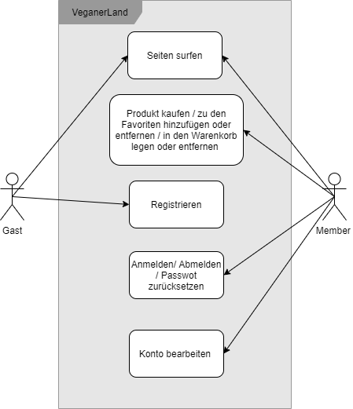

VeganerLand Dokumentation
Projektstellung
Im Rahmen der Veranstaltung zum Thema Webprogrammierung haben wir uns entschlossen, einen Online-Shop für den Verkauf von Obst und Gemüse zu erstellen.
Zielgruppe
Welche Personen hätten Interesse an unserer Seite?
- Personen, die Obst und Gemüse kaufen möchten
- Personen, die in Deutschland leben
Beschreibung der verwendeten Tools zur Erstellung des Projekts
Das VeganerLand Team hat folgende Software für die Herstellung der Webseite benutzt:
- Team-Kommunikation: WhatsApp, Discord, Cisco Webex Mettings
- Code: Visual Studio Code, phpStorm
- Server: XAMPP (Lokales Server für Datenbank + PHP)
- Projektmanagment: TortoiseGit (Im verbindung mit GitHub), Miro
- Browser: Google Chrome, Mozilla Firefox
- Datenbank: MySQLWorkbench + phpMyAdmin
Ergebnisse der Recherche von ähnliche Seiten
Als Inspiration haben uns hauptsächlich drei Seiten gedient:
-
www.nahkauf.de - für die Darstellung der Produkte

-
www.soliver.de - für Stil unserer Seiten

-
www.amazon.de - für das Design von unserem Footer

Checklist
Allgemein GWP/DWP
- Mindestens 6 Seiten
- VeganerLand besitzt 11 Seiten
- Homepage
- Über uns
- Obst
- Gemüse
- Angebote
- Login
- SignUp
- Passwort vergessen
- Einstellung
- Einkaufskorb
- 404-Seite
- Mindestens 3 Unterseiten
- Unterseiten von Obst
- Alle
- Zitrusfrüchte
- Beeren
- Nüsse
- Exotische Früchte
- Unterseiten von Gemüse
- Alle
- Kartoffeln
- Pilze
- Unterseiten von Password vergessen
- Identitätsüberprüfung
- neues Passwort eingeben
- Unterseiten von Einkaufskorb
- Liste der Waren im Korb
- Eingabe/Bestätigung der Lieferadresse
- Einheitliche Navigation
- Der header ist semi-statisch.
- Gäste sehen nur den "Log In"-Button. Angemeldete Nutzer können sehen den "Konto"-Button für das Untermenü.
- Wenn neue Kategorien in die Datenbank eingefügt werden, wird auch ein Untermenüpunkt in Obst bzw. Gemüse hinzugefügt.
- Der header befindet sich immer am oberen Rand vom Fenster und ändert seine Größe nicht. 
- Navigation mit Untermenüs
- Konto hat zwei Untermenüs. 
- Obst hat fünf Untermenüs.
- Gemüse hat drei Untermenüs.
- Obst und Gemüse Untermenüs werden dynamisch dargestellt in bezug auf Datenbank(jesse)aus der Datenbank ausgelesen. 
- Mindestens 3 Formulare
- VeganerLand Formulare  
- Vermeidung von doppelten Code
- Codestil und Dokumentation
- Kommentierung von nicht selbsterklärenden Code
- Beschreibung des Stiles in der README.md
- Dokumentation des Projektes in einer seperaten HTML-Datei (dieser hier).
Keine Verwendung von Frameworks- Frameworks wurden benutzt um die Icons anzuzeigen. (Abgesegnet von Professor Kruse)
- Installationshinweise
- Erläuterungen zur Installation befinden sich in der README.md
- Einwahldaten für einen Kunden befinden sich in der README.md
- Informationen zu dem Prozess "Passwort vergessen" stehen in der README.md (da keine E-Mails verschickt werden können.)
- Datenbank-Export
- Die Dateien befinden sich in \VeganerLand\database
- veganerland.sql - Erstellung der Datenbank und Einfügen eines Kunden und einer Adresse
- category.sql - Einfügen der Informationen zu den Categorien
- products.sql - Einfügen der Informationen zu den Produkten
- Tests
- Chrome: 24 Zoll Monitor, 14 Zoll Monitor
- Mozilla Firefox Monitor, 14 Zoll Monitor
- Firefox: 27 Zoll Monitor
- Chrome Dev-Tools: iPhone X, Pixel 2
- Chrome Dev-Tools: iPhone X, Pixel 2
- Firefox Dev-Tools: iPhone X/XS iOS12
- Firefox Dev-Tools: iPhone 6/7/8 Plus iOS 11
- Firefox Dev-Tools: iPhone 6/7/8 iOS 11
- Firefox Dev-Tools: iPad
- Firefox Dev-Tools: Kindle Fire HDX Linux
- Firefox Dev-Tools: Galaxy S9/S9+ Android 7.0
Allgemein GWP
- Passende, abwechslungsreiche Gestaltung
- Interaktivität schaffen mit CSS/JavaScript
- Das Design wurde einfach gehalten.
- Hamburger-Menü wurde mit CSS erstellt.
- Quelltext Optimierung durch Metas, Alt, Title, Noscript
- Alle Bilder haben ein alt-Attribut
- Alle Links haben ein title-Attribut
- Sinnvolle Verwendung von HTML5
- Einbindung von Bilder
- Die Bilder der Produkte werden dynamisch über php eingebunden.
- Responsive Webdesign
- Optimiert für Bildschrirme kleiner und gröser als 720px.
- Optimiert für die Auslösung von Computern, Smartphones und Tablets.
Allgemein DWP
- Formulare werden mittels PHP/JS behandelt und Fehler angezeigt
- Alle Formulare werden clientseitig mittels JavaScript und HTML required Attribut geprüft.
- Nachdem die Formulare zum Server gesendet wurden, werden sie nochmal mit PHP überprüft.
- Mittels HTMLspecialchars gehen die Eingaben der Nutzer bei einem Fehlschlag in der Datenverarbeitung nicht verloren.
- Nutzeranmeldung
- Erfolgt durch Eingabe einer Email-Adresse und eines Passwortes.
- Nutzerregistrierun
- Die Email-Adresse kann nur einmal in der Datenbank stehen.
- Die Sicherheit des Passwortes wird über RegEx überprüft.
- Funktionsbereitstellung mit/ohne JS
- Absenden von Formulare mit AJAX
- Produkte werden über AJAX in den Warenkorb gelegt.
- Seiten werden dynamisch ausgebaut (Datenbank)
- Untermeüpunkte von Obst und Gemüse werden aus der Datenbank ausgelesen.
- Die Informationen über die Waren im Einkaufswagen und in der Favoritenliste werden aus der Datenbank ausgelesen.
- Die Produkte und alle dazugehörigen Informationen werden aus der Datenbank ausgelesen.
- Nachlade Funktion mit JS
- Hier was uns gefehlt hat, war eigentlich Zeit.
- 404-Error-Page
- Bei ungültigen Werten für den controller oder der action wird die 404-Seite aufgerufen.
- Der Nutzer kommt über einen Link wieder zur Homepage.
- Datenbank angebunden
- Die Datenbank wurde über PDO in der core/database.php angebunden.
- Daten werden aus der Datenbank gelesen.
- siehe "Seiten werden dynamisch aufgebaut"
- Anzeigen der Nutzerdaten auf der Unterseite "Einstellungen".
- Anzeigen der Bevorzugten Lieferadresse, falls eine angegeben ist.
- Daten werden in die Datenbank geschrieben.
- Wenn ein Nutzer ein neues Konto anlegt.
- Legen von Waren in den Einkaufskorb oder in die Favoritenliste.
- Bearbeiten der Nutzerdaten auf der Seite "Einstellungen".
- Daten werden aus der Datenbank gelöscht.
- Entfernen von Produkten aus dem Einkaufskorb. (Bedingt)
- Entfernen von Produkten aus der Favoritenliste.
Sitemap
Design
Farbenauswahl
| #90e275 | → helles grün |
| #4f976b | → dunkles grün |
| #ae3c58 | → rot |
| #ffffff | → weiß |
| #070617 | → schwarz |
Logo
Layout
Unsere Website verkauft Obst und Gemüse. Daraus ergibt sich ein relativ großes Kundenspektrum. Aus diesem Grund haben wir das Design der Seiten einfach und überschauber gehalten.
Schrifftarten
- Arial
- Helvetica
- sans-serif
Funktionalitäten der Seiten
MVC
- Modelle
- Die Modelle sind nach den Tabellen der Datenbank erstellt. Sie enthalten Funktionen zu auslesen der Daten.
- Die Modelle können von allen Steuerungseinheiten (controller) und allen Ansichten (view) verwendet werden.
- Ansichten
- Ansichten können nur über Modelle oder Steuerungseinheiten auf die Datenbank zugreifen.
- Ansichten sind ja nach zugewieser Steuerungseinheiten unterteilt.
- Steuerungseinheiten
- Die Website besitzt vier Steuerungseinheiten: errors, pages, products und registration
- Die Steuerungseinheiten haben Lese- und Schreibezugriff auf die Datenbank.
Ansichten in der pages-Steuerungseinheit
- about.php - Statische Seite, mit Informationen zum Unternehmen und Link zur Projektdokumentation
- homepage.php - Statische Seite, mit Links zu den Produktseiten
- login.php - Beinhaltet ein Formular mit denen sich Nutzer anmelden können, falls sie ein Konto besitzen.
- logout.php - Angemeldete Nutzer können sich abmelden. Diese Seite sollte nicht auf der Website zu sehen sein.
- resetPassword.php - (Molham)
- seeting.php - Beinhaltet ein Formular um die Nutzerdaten zu ändern und ein Formular um Produkte aus der Favoritenliste in den Warenkorb einzufügen.
Ansichten in der products-Steuerungseinheit
- bargain.php, fruits.php, vegetables.php, filter.php und search.php - Rufen die include.php auf da alle ähnliche Code enthalten.
- include.php - Gibt die von der Steuerungseinheiten zu den jeweiligen Seiten bereitgestellten Informationen in dem grwünschtem Format aus.
- cart.php - Die Ansicht unterteilt sich noch einmal.
- Warenkorb - Zeigt ein Formular mit dem von der Steuerungseinheiten bereitgestellten Informationen zu den Waren im Warenkorb des Kunden an. Der Kunde angeben, welche Waren entfernt werden sollen.
- Lieferadresse - Zeigt ein Formular für die Informationen der Lieferadresse. Falls Informationen bereits von der Steuerungseinheiten bereitgestellt werden können, werden diese angezeigt. Der Kunde kann diese Informationen bestätigen oder neue Informationen eingeben.
Ansichten in der errors-Steuerungseinheit
- error404.php - Statische Seite, die bei Fehlern in der URL aufgerufen wird. Beinhaltet einen Link zu Homepage.
Ansichten in der registration-Steuerungseinheit
- registration.php - Beinhaltet ein Formular mit dem der Nutzer ein neues Konto erstellen kann.
ER-Modell
Rollenmodell
Herausforderungen
-
Es gab viele Ideen zum Projekt am Anfang des Semesters.
→ Was macht am meisten Spaß zu implementieren und deckt gleichzeitig die Anforderungen ab? -
Zeitgrenze - Bei den viele Ideen für das Projekt, hatten wir nicht genug Zeit...
→ Die Anforderungen in drei Bereiche unterteilen- Musskriterien
- Seiten, wo die Produkte angezeigt werden
- Warenkorb
- Formulare zum Login, Registrieren und Kontakt
- Error-Seite für die falschen URL
- Wünschkriterien
- Bearbeiten der Nutzerdaten
- Favoritenliste
- Zugriff als Administrator
- Abgrenzungkriterien
- Unnötiges JS vermeiden
-
Große Aufgaben sehen am Anfang unmöglich aus.
→ Diese Aufgabe in kleinerer Teilaufgaben teilen und mit einem Teil anfangen.
→ Als Gruppe sollte man nicht nach dem Prinzip TEAM arbeiten und absprechen, wer was macht.
Lessons Learned (Bitte alle)
- Umgang mit Github.
- Grundlagen Dynamische Webprogrmmierung - PHP und JS sind immer noch wichtig!
- Projektstrukturierung und Zeitplanung: Eine gute Projektstrukturierung und Zeitplanung ist notwendig um das Projekt voranzubringen. Ohne feste Struktur in der Vorgehensweise macht jeder einfach irgendwas und nichts funktioniert wirklich miteinander. Auch ist Kommunikation zwischen den Teammitgliedern hierbei ein wichtiger Schlüssel zum Erfolg.
- Kleinigkeiten sind keine Kleinigkeiten - Kleinigkeiten benötigen fast IMMER mehr Zeit als "mal eben kurz..". Deshalb sollte man diese "Kleinigkeiten" am besten sofort erledigen!
Besonderheiten (Bitte alle)
- 1.
- 2.